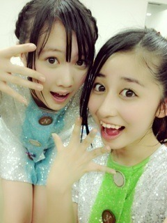
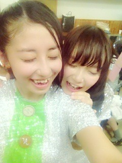

| 2012/10 22 Mon | 大好き。(´>∀<｀)ゝ |

滝汗いらりん(о´∀`о)笑
今日は長野のライブイベントに来てくださったたくさんの皆さん
本当ありがとうございました
 ！！！
！！！
！！！
こんなに集まってくれるなんて思ってなかったので
びっくりしたしめっちゃ嬉しかったです(> <)♡♡
今日もたくさんの方に見てもらおうと思って大きく、
歌詞に合わせて表情とかいっぱい意識してみたんだけど
見えましたかねー⁇(o^^o)
７曲も披露できて楽しかった

ヾ(*･∀･*)ﾉﾞ
みんなで滝汗。笑

わちゃっっっ
今日のメンバーは15人。
テストでお休みの幸奈と、
あと、乃木坂の大好きなお姉さん、佑美子姉さんがお休みでした。
ゆみこ姉さん、卒業、おめでとう。
本当に、本当にゆみこが大好きで、
すごい頼りにしてました。
その代わりに迷惑もかけちゃったかもしれない。
そうだったらごめんね...
なんて言ったらわかんないけど
ゆみ姉は、永遠に、ずっとずっと
乃木坂の大事なお姉さんだから。
そこは変わらないよ(o^^o)
ずっと言えなかったけど、
ゆみ姉が本当に大好きだから。
だからこそ
微力かもしれないけど
ゆみ姉の背中をそっと押していきたい
がんばれって応援し続けたい
ありがとうございました。
なんていう言葉は言わない。
言いたくない。
いつもいつもありがとう。
そしてこれからもよろしくね。
っていう言葉しかないから。
乃木坂を卒業しても、
ずっと側でみんなのことを見守ってくれてるって、
そう信じてます。
大好きだから
これからもよろしくだから
笑顔で見送りたい。
涙が出ても
顔がぐしゃぐしゃになっても
笑顔で見送りたい。
ゆみ姉、本当にありがとう。
ずっとずっと大好きです。
ちはる
コメント(102)
2012/10/22 00:48